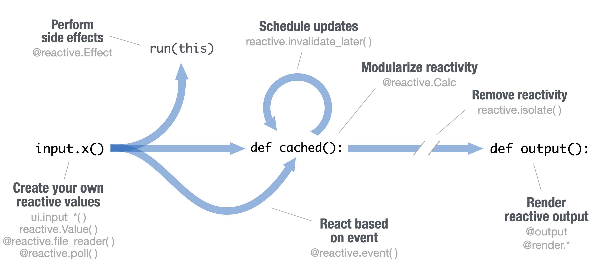

Download PDF
Shiny for Python :: Cheatsheet
Build an App
A Shiny app is an interactive web page (ui) powered by a live Python session run by a server (or by a browser with Shinylive).
Users can manipulate the UI, which will cause the server to update the UI’s displays (by running Python code).
Save your app as app.py in a directory with the files it uses.
- app-name: The directory name is the app name
app.py
www/: Place images, CSS, etc. to share with the browser in a folder named “www”
Include any other scripts, data sets, or assets used by the app in the same directory.
Run shiny create . in the terminal to generate a template app.py file
Launch apps with shiny run app.py --reload
from shiny import App, render, ui
import matplotlib.pyplot as plt
import numpy as np
# Nest Python functions to build an HTML interface
app_ui = ui.page_fluid( # Layout the UI with Layout Functions
# Add Inputs with ui.input_*() functions
ui.input_slider(
"n", "Sample Size", 0, 1000, 20
),
# Add Outputs with ui.ouput_*() functions
ui.output_plot("dist")
)
def server(input, output, session):
# For each output, define a function that generates the output
@output # Designate output functions with the @output decorator
@render.plot # Specify the type of output with a @render. decorator
def dist(): # Use the output id as the function name
# Call the values of UI inputs with input.<id>()
x = np.random.randn(input.n())
plt.hist(x, range=[-3, 3])
# Call App() to combine app_ui and server() into an interactive app
app = App(app_ui, server)Shinylive
Shinylive apps use WebAssembly to run entirely in a browser–no need for a special server to run Python.
- Edit and/or host Shinylive apps at shinylive.io
- Create a Shinylive version of an app to deploy with
shinylive export myapp site. Then deploy to a hosting site like Github or Netifly. - Embed Shinylive apps in Quarto sites, blogs, etc
To embed a Shinylive app in a Quarto doc, include the below syntax.
---
filters:
- shinylive
---
An embedded Shinylive app:
```{r}
#| standalone: true
# [App.py code here...]
```Outputs
Match ui.output_* functions to @render.* decorators
| decorator | function |
|---|---|
@render.data_frame |
ui.output_data_frame(id) |
@render.image |
ui.output_image(id, width, height, click, dblclick, hover, brush, inline) |
@render.plot |
ui.output_plot(id, width, height, click, dblclick, hover, brush, inline) |
@render.table |
ui.output_table(id) |
@render.text |
ui.output_text(id, container, inline) also ui.output_text_verbatim() |
@render.ui |
ui.output_ui(id, inline, container, ...) also ui.output_html() |
@sessiom.download |
ui.output_download_button(id, label, icon,...) |
Inputs
Use a ui.input_*() function to make an input widget that saves a value as input.<id>. Input values are reactive and need to be called as input.<id>().
ui.input_action_button(id, label, icon, width, ...)ui.input_action_link(id, label, icon, ...)ui.input_checkbox(id, label, value, width)ui.input_checkbox_group(id, label, choices, selected, inline, width)ui.input_date(id, label, value, min, max, format, startview, weekstart, language, width, autoclose, datesdisabled, daysofweekdisabled)ui.input_date_range(id, label, start, end, min, max, format, startview, weekstart, language, separator, width, autoclose)ui.input_file(id, label, multiple, accept, width, buttonLabel, placeholder, capture)ui.input_numeric(id, label, value, min, max, step, width)ui.input_password(id, label, value, width, placeholder)ui.input_radio_buttons(id, label, choices, selected, inline, width)ui.input_select(id, label, choices, selected, multiple, selectize, width, size) Also ui.input_selectize()ui.input_slider(id, label, min, max, value, step, ticks, animate, width, sep, pre, post, timeFormat, timezone, dragRange)ui.input_switch(id, label, value, width)ui.input_text(id, label, value, width, placeholder, autocomplete, spellcheck) Also ui.input_text_area()
Reactivity
Reactive values work together with reactive functions. Call a reactive value from within the arguments of one of these functions to avoid the error No current reactive context.

Create Your own Reactive Values
ui.input_*()makes an input widget that saves a reactive value asinput.<id>().reactive.value( )Creates an object whose value you can set.#... app_ui = ui.page_fluid( ui.input_text("a", "A") ) def server(input, output, session): rv = reactive.Value() rv.set(5) #...
Create Reactive Expressions
@reactive.Calcmakes a function a reactive expression. Shiny notifies functions that use the expression when it becomes invalidated, triggering recomputation. Shiny caches the value of the expression while it is valid to avoid unnecessary computation.#... def server(input, output, session ): @reactive.Calc def re(): return input.a() + input.b() #...
React Based on Event
@reactive.event()Makes a function react only when a specified value is invalidated, hereinput.a.#... def server(input, output, session ): @reactive.Calc @reactive.event(input.a) def re(): return input.b() #...
Display Reactive Output
ui.output_*()adds an output element to the UI.@output,@render.*are decorators to identify and render outputsdef <id>():A function to generate the outputapp_ui = ui.page_fluid( ui.input_text("a", "A"), ui.output_text("b"), ) def server(input, output, session ): @output @render.text def b(): return input.a()
Perform Side Effects
@reactive.EffectReactively trigger a function with a side effect. Call a reactive value or use@reactive.eventto specify when the function will rerun.#... def server(input, output, session ): @reactive.Effect @reactive.event(input.a) def print(): print("Hi") #...
Remove Reactivity
reactive.isolate()Create non-reactive context within a reactive function. Calling a reactive value within this context will not cause the calling function to re-execute should the value become invalid.# ... def server(input, output, session): @output @render.text def a(): with reactive.isolate(): return input.a() #...
Layouts
Combine multiple elements into a “single element” that has its own properties with a panel function:
ui.panel_absolute()ui.panel_conditional()ui.panel_fixed()ui.panel_main()ui.panel_sidebar()ui.panel_title()ui.panel_well()ui.row() / ui.column()
ui.panel_well(
ui.input_date(...),
ui.input_action_button(...)
)Layout panels with a layout function. Add elements as arguments of the layout functions.
ui.layout_sidebar()app_ui = ui.page_fluid( ui.panel_title( ), ui.layout_sidebar( ui.panel_sidebar( ), ) )ui.row()app_ui = ui.page_fluid( ui.row( ui.column(width = 4), ui.column(width = 2, offset = 3), ), ui.row( ui.column(width = 12) ) )
Layer ui.nav( )s on top of each other, and navigate between them, with:
# navset tab
ui.page_fluid(
ui.navset_tab(
ui.nav("tab 1", "contents"),
ui.nav("tab 2", "contents"),
ui.nav("tab 3", "contents")
)
)
# navpill list
ui.page_fluid(
ui.navset_pill_list(
ui.nav("tab 1", "contents"),
ui.nav("tab 2", "contents"),
ui.nav("tab 3", "contents")
)
)
# navbar page
ui.page_navbar(
ui.nav("tab 1", "contents"),
ui.nav("tab 2", "contents"),
ui.nav("tab 3", "contents"),
title = "Page"
)Themes
Use the shinyswatch package to add existing bootstrap themes to your Shiny app ui.
import shinyswatch
app_ui = ui.page_fluid(
shinyswatch.theme.darkly(),
# ...
)Shiny for R Comparison
Shiny for Python is quite similar to Shiny for R with a few important differences:
- Call inputs as
input.<id>()
R
input$xPython
input.x()
- Use decorators to create and render outputs. Define outputs as functions
def <id>():
R
output$y <- renderText(z())Python
@output @renderText def y(): return z()
- To create a reactive expression, use
@reactive.Calc
R
z <- reactive({ input$x + 1 })Python
@reactive.Calc def z(): return input.x()+1
- To create an observer, use
@reactive.Effect
R
a <- observe({ print(input$x) })Python
@reactive.Effect def a(): print(input.x())
- Combine these with
@reactive.event
R
b <- eventReactive( input$goCue, {input$x + 1} )Python
@reactive.Calc @reactive.event(input.go_cue ) def b(): return input.x() + 1
- Use
reactive.Value()instead ofreactiveVal()
R
reactiveVal(1)Python
reactive.Value(1)
- Use
nav_*()instead of*Tab()
R
insertTab() appendTab() # etc.Python
nav_insert() nav_append() # etc.
- Functions are intuitively organized into submodules
R
dateInput() textInput() # etc.Python
ui.input_date() ui.input_text() # etc.
CC BY SA Posit Software, PBC • info@posit.co • posit.co
Learn more at shiny.posit.co/py/
Updated: 2023-12.
packageVersion("shiny")[1] '1.7.4'